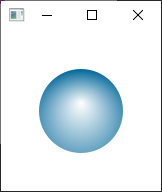
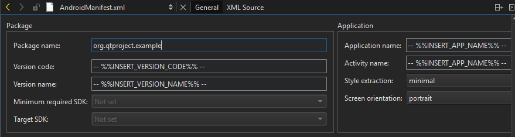

Creating a Mobile Application
How to create a Qt Quick application that uses Qt Quick Controls and runs on Android and iOS devices.
This tutorial describes how to use Qt Creator to develop Qt Quick applications for Android and iOS devices when using Qt 6 as the minimum Qt version and CMake as the build system.
You will develop a Qt Quick application that accelerates an SVG (Scalable Vector Graphics) image based on changing accelerometer values.
Note: You must have the Qt Sensors module from Qt 6.2 or later installed to be able to follow this tutorial.

Setting up the Development Environment
To build the application for and run it on a mobile device, you must set up the development environment for the device platform and configure a connection between Qt Creator and the mobile device.
To develop for Android devices, you must install Qt for Android and set up the development environment, as instructed in Connecting Android Devices.
To develop for iOS devices, you must install Xcode and use it to configure a device. For this, you need an Apple developer account and iOS Developer Program certificate that you receive from Apple. For more information, see Connecting iOS Devices.
Creating the Project
- Select File > New Project > Application (Qt) > Qt Quick Application.

- Select Choose to open the Project Location dialog.
- In the Name field, enter a name for the application. When naming your own projects, keep in mind that you cannot easily rename them later.
- In the Create in field, enter the path for the project files. You can move project folders later without problems.
- Select Next to open the Define Project Details dialog.

- Deselect the Create a project that you can open in Qt Design Studio check box.
Note: This tutorial shows how to create the application in the Edit mode. If you leave the check box selected, the following instructions won't apply.
- Select Next to open the Kit Selection dialog.
- Select Qt 6.4 or later kits for the platforms that you want to build the application for. To build applications for mobile devices, select kits also for Android and iOS.
Note: The list shows kits that you specify in Preferences > Kits. For more information, see Add kits and Kits.
- Select Next to open the Project Management dialog.
- Review the project settings, and select Finish (or Done on macOS) to create the project.
For more information about the settings that you skipped, see Create Qt Quick Applications.
Adding Images as Resources
The main view of the application displays an SVG bubble image that moves around the screen when you tilt the device.
For the image to appear when you run the application, you must specify it as a resource in the RESOURCES section of CMakeLists.txt file that the wizard created for you:
qt_add_qml_module(appaccelbubble
URI accelbubble
VERSION 1.0
QML_FILES Main.qml
RESOURCES Bluebubble.svg
)
Creating the Accelbubble Main View
Create the main view in the main.qml file by adding an Image component with Bluebubble.svg as the source:
Image {
id: bubble
source: "Bluebubble.svg"
smooth: true
You can use any other image or component instead.
Add custom properties to position the image in respect to the width and height of the main window:
property real centerX: mainWindow.width / 2
property real centerY: mainWindow.height / 2
property real bubbleCenter: bubble.width / 2
x: centerX - bubbleCenter
y: centerY - bubbleCenter
Add code to move the bubble based on Accelerometer sensor values. First, add the following import statement:
import QtSensors
Add the Accelerometer component with the necessary properties:
Accelerometer {
id: accel
dataRate: 100
active:true
Add the following JavaScript functions that calculate the x and y position of the bubble based on the current Accelerometer values:
function calcPitch(x,y,z) {
return -Math.atan2(y, Math.hypot(x, z)) * mainWindow.radians_to_degrees;
}
function calcRoll(x,y,z) {
return -Math.atan2(x, Math.hypot(y, z)) * mainWindow.radians_to_degrees;
}
Add the following JavaScript code for onReadingChanged signal of Accelerometer component to make the bubble move when the Accelerometer values change:
onReadingChanged: {
var newX = (bubble.x + calcRoll(accel.reading.x, accel.reading.y, accel.reading.z) * .1)
var newY = (bubble.y - calcPitch(accel.reading.x, accel.reading.y, accel.reading.z) * .1)
if (isNaN(newX) || isNaN(newY))
return;
if (newX < 0)
newX = 0
if (newX > mainWindow.width - bubble.width)
newX = mainWindow.width - bubble.width
if (newY < 18)
newY = 18
if (newY > mainWindow.height - bubble.height)
newY = mainWindow.height - bubble.height
bubble.x = newX
bubble.y = newY
}
You need to ensure that the position of the bubble is always within the bounds of the screen. If the Accelerometer returns not a number (NaN), the value is ignored and the bubble position is not updated.
Add SmoothedAnimation behavior on the x and y properties of the bubble to make its movement look smoother.
Behavior on y {
SmoothedAnimation {
easing.type: Easing.Linear
duration: 100
}
}
Behavior on x {
SmoothedAnimation {
easing.type: Easing.Linear
duration: 100
}
}
Locking Device Orientation
The device display is rotated by default when the device orientation changes between portrait and landscape. For this example, it would be better for the screen orientation to be fixed.
To lock the orientation to portrait or landscape on Android, specify it in an AndroidManifest.xml that you can generate in Qt Creator. For more information, see Editing Manifest Files.

To generate and use a manifest file, you must specify the Android package source directory, QT_ANDROID_PACKAGE_SOURCE_DIR in the CMakeLists.txt file:
set_property(TARGET appaccelbubble APPEND PROPERTY
QT_ANDROID_PACKAGE_SOURCE_DIR ${CMAKE_CURRENT_SOURCE_DIR}/android
)
For compatibility with CMake versions older than 3.19, add a manual finalization step to the qt_add_executable function:
qt_add_executable(appaccelbubble
main.cpp
MANUAL_FINALIZATION
)
Then, add the qt_finalize_executable function:
qt_finalize_executable(appaccelbubble)
On iOS, you can lock the device orientation in an Info.plist file that you specify in the CMakeLists.txt file as the value of the MACOSX_BUNDLE_INFO_PLIST variable:
set_target_properties(appaccelbubble PROPERTIES
MACOSX_BUNDLE_GUI_IDENTIFIER my.example.com
MACOSX_BUNDLE_BUNDLE_VERSION ${PROJECT_VERSION}
MACOSX_BUNDLE_SHORT_VERSION_STRING ${PROJECT_VERSION_MAJOR}.${PROJECT_VERSION_MINOR}
MACOSX_BUNDLE_INFO_PLIST "${CMAKE_CURRENT_SOURCE_DIR}/Info.plist"
MACOSX_BUNDLE TRUE
WIN32_EXECUTABLE TRUE
)
Adding Dependencies
You must tell the build system which Qt modules your application needs by specifying dependencies in the project file. Select Projects to update the CMake configuration with the following Qt module information: Sensors, Svg, Xml.
The CMakeLists.txt file should have the following entries that tell CMake to look up the Qt installation and import the Qt Sensors, Qt SVG, and Qt XML modules needed by the application:
find_package(Qt6 6.4 REQUIRED COMPONENTS Quick Sensors Svg Xml)
You also need to add the Qt modules to the list of target link libraries. target_link_libraries tells CMake that the accelbubble executable uses the Qt Sensors, Qt SVG, and Qt XML modules by referencing the targets imported by the find_package() call above. This adds the necessary arguments to the linker and makes sure that the appropriate include directories and compiler definitions are passed to the C++ compiler.
target_link_libraries(appaccelbubble
PRIVATE Qt6::Quick Qt6::Sensors Qt6::Svg Qt6::Xml)
After adding the dependencies, select Build > Run CMake to apply configuration changes.
For more information about the CMakeLists.txt file, see Getting started with CMake.
Running the Application
You can now deploy the application to a device:
- Enable USB Debugging on the Android device or developer mode on the iOS device.
- Connect the device to the development PC.
If you are using a device running Android v4.2.2, it should prompt you to verify the connection to allow USB debugging from the PC. To avoid such prompts every time you connect the device, select the Always allow from this computer check box, and then select OK.
- To run the application on the device, press Ctrl+R.
Files: